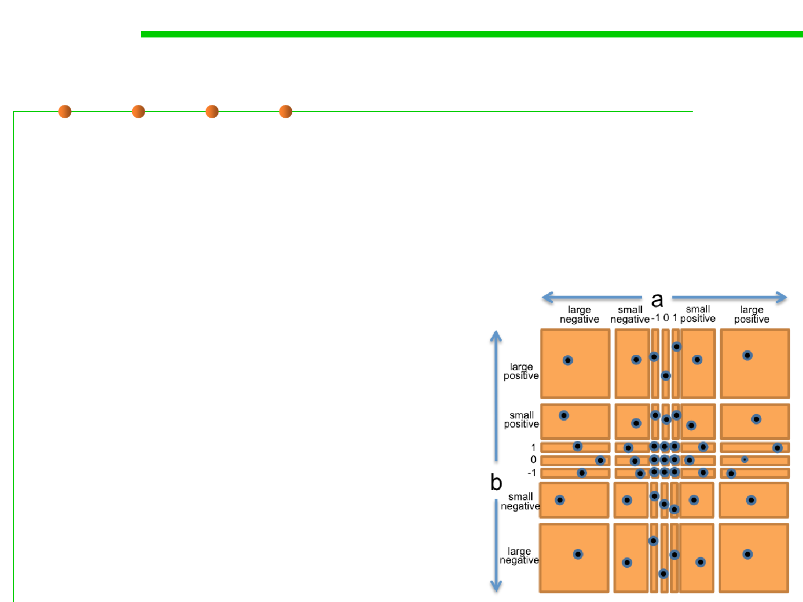

7.5 Testing and Test-First Programming
Example: BigInteger.multiply()
▪ To produce the test suite, we would pick an arbitrary pair (a,b) from
each square of the grid, for example:
– (a,b) = (-3, 25) to cover (small negative, small positive)
– (a,b) = (0, 30) to cover (0, small positive)
– (a,b) = (2^100, 1) to cover (large positive, 1)
– etc.
▪ The points are test cases that we
might choose to completely cover
the partition.